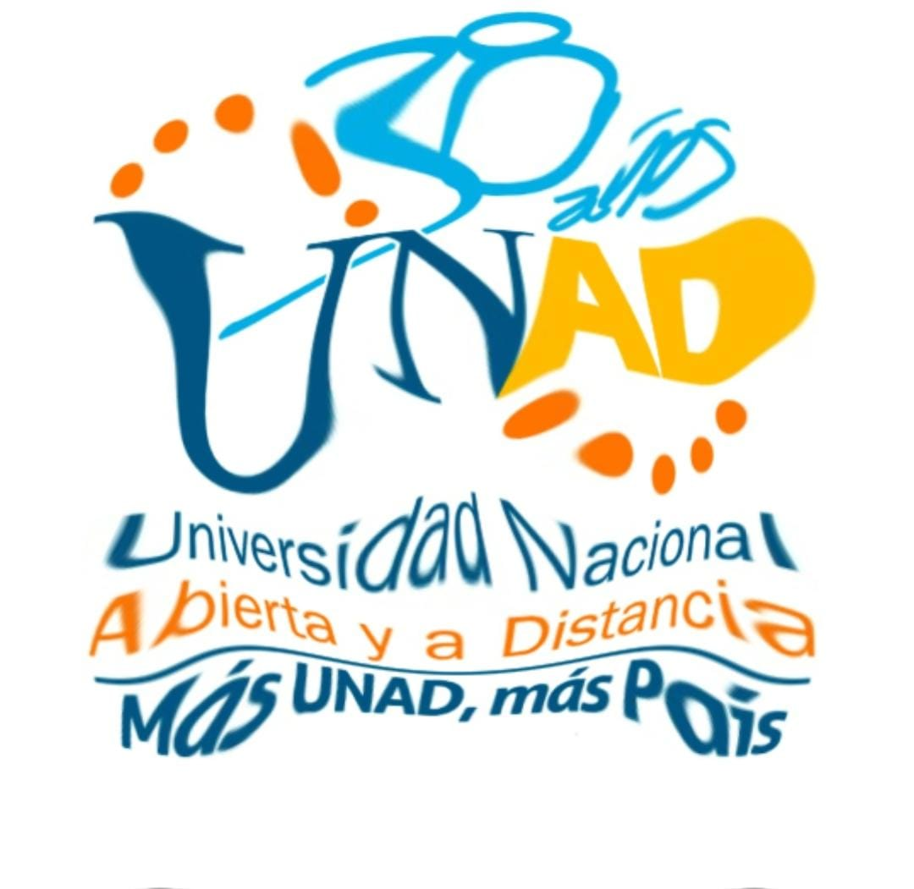

Estudiar una carrera universitaria es una de las decisiones más importantes que tomarás en la vida. La responsabilidad que conlleva junto al inevitable cambio que produce hace que sea muy importante tener claro por qué queremos entrar a la universidad. Es importante saber qué puede aportarnos y qué sacrificios tendremos que pasar para llegar a obtener nuestro título universitario. Estudiar en la UNAD es verdaderamente fácil ya que nos brinda accesibilidad debido a que se puede de manera virtual y a distancia, esto generándonos una comodidad para no detener esas ganas de ser unos grandes universitarios y profesionales, también nos brinda una gran variedad procesos de formación así que no hay excusas para no estudiar en la UNAD
Ariticulo Tecnologico
El mundo de la multimedia es un entorno de aplicaciones donde se agrupan varios elementos como audio, video, imágenes, animaciones, textos, con el objetivo de brindar información clara y precisa de manera interactiva para el usuario. La multimedia es un avance tecnológico que está aportando grandes ventajas a la sociedad por ejemplo las teleconferencias en esta época de pandemia.